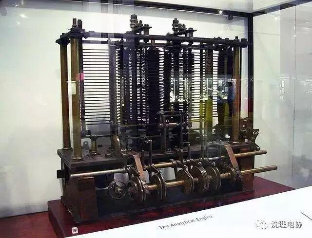
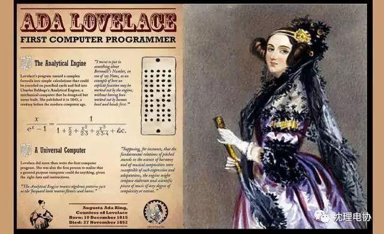
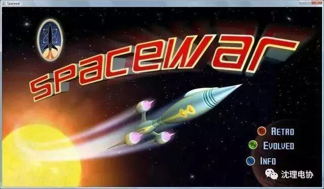
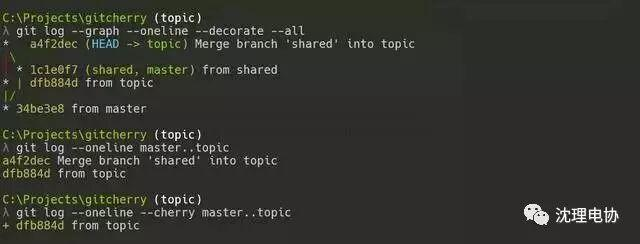
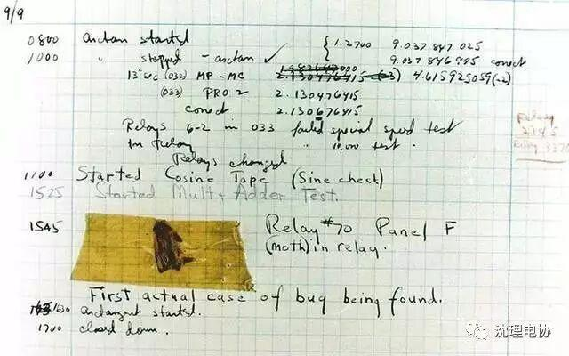

技术界这8件事，你晓得不？？......



作为公认的编程之父，Charles Babbage 发明了世界上首批计算机之一。他将这台新设备称为分析引擎。其体积超过一栋房屋，由六台蒸汽机驱动并使用打孔卡进行编程。分析引擎有四大主要组成部分：
转盘——相当于现代计算机中的CPU；
存储——相当于现代计算机中的内存与存储介质；
读取器——相当于输入机制；
打印机——用于实现信息输出。

电脑病毒的设计初衷
并非是造成损害
史上第一款电脑病毒，竟然是由防御技术专家 Fred Cohen 亲手设计出来的。他创造电脑病毒的目的仅仅是为了证明程序对电脑感染的可行性，从未希望借此对电脑造成任何危害。但这款程序却能够对电脑进行感染，并且能通过软盘等移动介质在不同计算机之间进行传播，因而命名为病毒。后来，他又创造出一种主动式电脑病毒，主要目的是帮助电脑用户找到未受感染可执行文件。

也许最令人难以置信的是，历史上第一名程序员是位女性。她的名字是Ada Lovelace。在1843年，这位英国数学家Ada Lovelace，翻译了意大利工程师Luigi Menabreaw撰写的分析引擎文章。在翻译过程中，她把自己的理解都批注到每篇文章下，而这举动加快了计算机编程技术的发展。在这之后，她又设计出了第一种能够利用分析引擎计算伯努利数的算法，这也是第一个用电脑编写的算法。

第一款数字化电脑游戏
从未带来任何利润回报

现在的视频游戏已经成为了最受瞩目的程序开发成果，然而历史上第一款数字计算机游戏则遭遇巨大失败。
第一个电脑游戏出现于1962年，由麻省理工学院的计算机程序员Steve Russell与其团队一同编写，这款名为《太空大战》的游戏耗费了他们近200个小时。该游戏允许两名玩家分别控制两艘飞船，目标是击中并摧毁对方飞船，并且玩家还需要躲避屏幕中代表星球的小白点。如果玩家撞上这些星球，则游戏失败。
虽然 Russell 和他的团队从未在这个游戏说的任何收益，但必须承认如果没有这一突破我们可能永远不会拥有如今蓬勃发展的视频游戏产业。

图像处理算法中使用最广的
一幅图片来自《花花公子》杂志
40年来，这幅被应用为图像处理方案中的泛用性标准测试素材，还被程序员们亲切称为 Lena 的图片。但大多数人都不知道，它是来自《花花公子》杂志1972年11月刊的插页。


Linux kernel 开创者和 Git 的开发者—— Linus 说，Git 使用了 SHA-1 并非是为了安全性，而是为了数据的完整性；它可以保证，在很多年后，你重新 checkout 某个 commit 时，一定是它多年前的当时的状态，完全一摸一样，完全值得信任。


在程序中 bug 一词用于技术错误。这一术语最初由爱迪生在1878年提出的，但当时并没有流行起来。在这的几年之后，美国上将 Grace Hopper 在她的日志本中，写下了她在 Mark II 电脑上发现的一项 bug。不过实际上，她说的真的是“虫子”问题，因为一只蛾子被困在电脑的继电器中，导致电脑的操作无法正常运行。如图片所见，她写道“这是我在电脑上发现的第一个bug”。

如果将计算机编程世界看作一个国家，那么其中涉及的语言种类必然冠绝群伦。目前已知的编程语言共有 698 种，远远超过任何以语言多样性著称的国家。


编辑：张婉娱

考试周
祝所有学长学姐同胞们，
逢考必过！！！